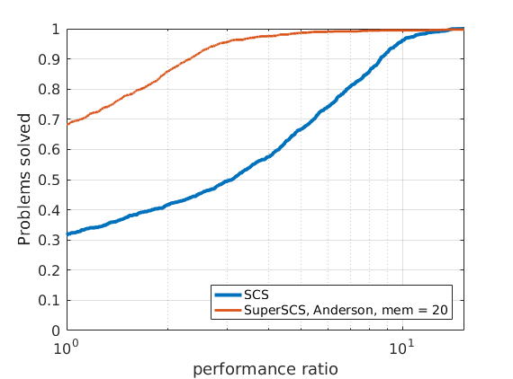
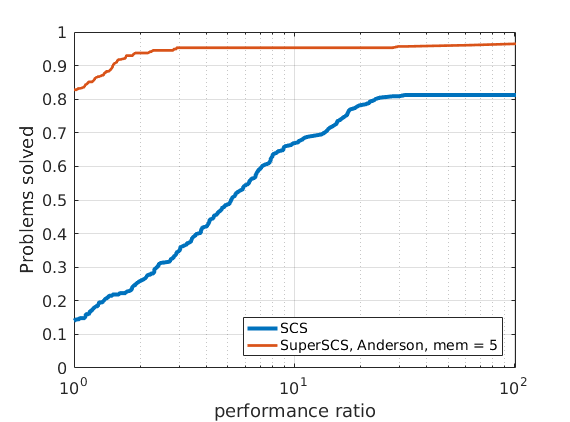

|
SuperSCS
1.3.2
|
|
SuperSCS
1.3.2
|
In order to compare different solvers, we employ the Dolan-Moré performance profile plot.
Let us briefly introduce the Dolan-Moré performance profile plot.
Let \(P\) be a finite set of problems used as benchmarks and \(S\) be a set of solvers we want to compare to one another.
Let \(t_{p,s}\) be the cost (e.g., runtime or flops) to solve a problem \(p\) using a solver \(s\).
We define the ration between \(t_{p,s}\) and the lowest observed cost to solve this problem using some solver \(s\in S\):
\begin{eqnarray*} r_{p,s} = \frac{t_{p,s}}{\min_{s \in S} t_{p,s}}. \end{eqnarray*}
If a solver \(s\) does not solve a problem \(p\), then we assign to \(r_{p,s}\) a very high value \(r_M > r_{p,s}\) for all other \(p,s\).
The cumulative distribution of the performance ratio is the Dolan-Moré performance profile plot.
In particular, define
\begin{eqnarray*} \rho_s(\tau) = \frac{1}{n_p}\#\{p\in P: r_{p,s}\leq \tau\}, \end{eqnarray*}
for \(\tau\geq 1\) and where \(n_p\) is the number of problems.
The Dolan-Moré performance profile is the plot of \(\rho_s\) vs \(\tau\), typically on a logarithmic x-axis.
In all benchmark results presented below we set the tolerance to \(10^{-4}\).
The maximum number of iterations was set to a very high value above which we may confidently tell the problem is unlikely to be solved (e.g., \(10^6\)).
Given that different algorithms (SCS, SuperSCS using Broyden directions and SuperSCS using Anderson's acceleration) have a different per-iteration cost, we allow every algorithm to run for a give time (see max_time_milliseconds).
After that maximum time has passed, if the algorithm has not converged we consider that it has failed to solve the problem.
In Broyden's method we deactivated the K0 steps.

| 
| |

|

| 
| 
|
288 logistic regression problems

|

|
48 ill-conditioned SDP problems

| ||

|

| |
We tested SuperSCS on the Maros-Meszaros collection of QP problems.
Find details here.
 1.8.6
1.8.6